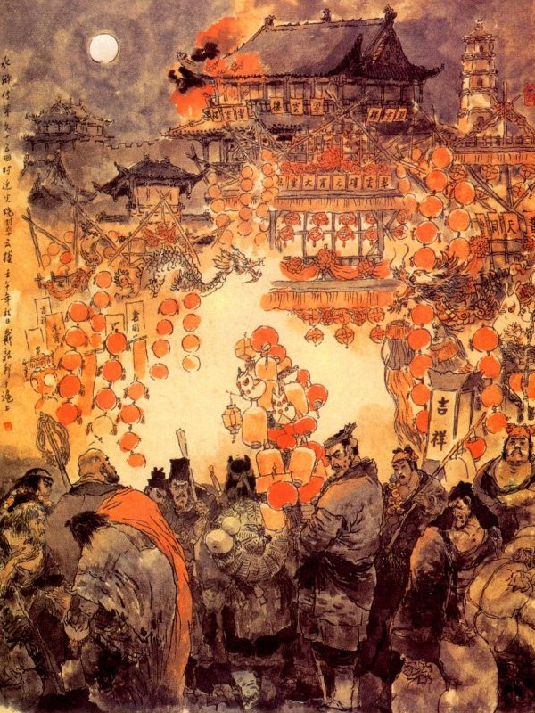
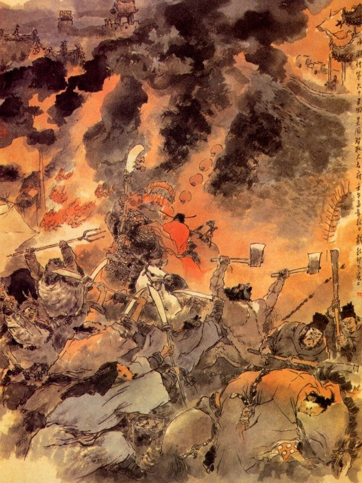

Bấy giờ Ngô Dụng nói với Tống Giang rằng:
- Huynh trưởng ngày nay may đã bình yên vô sự, lại có An Thái Y trông nom giúp đỡ ở đây, thực là vạn phúc cho sơn trại vạn phần. Vả trong bấy lâu nay tiểu đệ đã cho thám thính tin tức ở thành Đại Danh, nghe nói Lương Trung Thư đêm ngày lo nghĩ chỉ sợ quân mã của ta kéo đến thì rất là nguy biến. Tiểu đệ lại cho dán tất cả yết thị trong thành ngoài thành để hiểu dụ cho nhân dân cùng biết về việc đó là ta cốt bắt mấy người can phạm mà không hề gì đến dân, vì thế nên Lương Trung Thư lại càng lo riết. Còn về phần Xài Thái Sư từ khi nghe Quan Thắng đầu hàng thì cũng sợ hãi kinh hoàng không dám tâu rõ trước mặt Thiên Tử và thường gửi thư đến bảo với Lương Trung Thư phải lưu tính mạng của Lư Tuấn Nghĩa cùng Thạch Tú để khỏi sự nguy hiểm về sau.
Tống Giang nghe nói lại thúc giục Ngô Dụng mau mau hãy lập kế đánh thành. Ngô Dụng định kế rằng:
- Hiện nay mới đầu mùa xuân, sắp đến ngày tết Nguyên Tiêu trong thành Đại Danh tất có hội chơi đèn rất náo vậy ta nên thừa cơ hội này mà phục binh trong thành rồi sau sẽ kéo đại binh ập vào thì thế nào cũng phá được.
Tống Giang cả mừng khen rằng:
- Kế đó rất diệu xin quân sư thi hành ngay cho mới được.
Ngô Dụng liền quay ra hỏi các Đầu Lĩnh rằng:
- Nay cần nhất là việc phóng lửa ở trong thành, vậy trong đám anh em ai đảm đang cho việc đó.
Thời Thiên tiếp luôn rằng:
- Khi Tiểu đệ còn nhỏ có qua thành Đại Danh ít bữa, trong thành có một nơi gọi là Thúy Vân Lâu, trong lầu trên dưới có tất cả trên một trăm phòng. Đến đêm hôm Nguyên Tiêu chắc là huyên náo. Vậy để xin vào trước trong thành lẩn ở Thúy Vân Lâu rồi tối hôm đó sẽ phóng lửa ngay đó để lên hiệu rồi Quân Sư kéo quân mã vào sau.
Ngô Dụng cả mừng mà rằng:
- Được vậy thì hay lắm! Sáng mai ngươi bắt đầu đi sớm, cứ đến đêm Nguyên tiêu thì phóng hoả ở trên lầu Thúy Vân thế là công lớn.
Thời Thiên vâng lời đi trước. Sáng hôm sau Ngô Dụng cắt cho Giải Trân, Giải Bảo giả làm phường săn, tìm đến bán chim muông ở các quan nha trong thành để đợi đến hôm đó hễ thấy lửa hiệu thì lập tức phải ngăn giữ quân lính đi báo. Hai người vâng lệnh đi ra, lại sai Đỗ Thiên, Tống Vạn giả làm người bán gạo, kéo xe vào ngủ trọ trong thành, đến đêm hôm đó trông cửa hiệu mà lấy cửa Đông, Khổng Minh, Khổng Lượng giả làm hai tên đầy tớ, lẻn vào thềm nhà các chốn náo nhiệt ở trong thành để bấy giờ đi tiếp ứng mọi nơi. Lý Ứng, Sử Tiến giả làm khách đi chơi, trọ ở ngoài cửa Đông thành đợi khi lửa lên thì đi giết đám lính coi thành để mở cửa cho quân ra. Lư Trung Thư cùng Võ Tòng giả làm thầy chùa đi khuyên giáo, đến chùa nào ở gần thành Đại Danh, nom lửa hiệu mà đến phía ngoài cửa nam để ngăn đón đại quân và đánh chặn đường đi. Trâu Uyên, Trâu Nhuận giả làm người bán đèn, nghỉ ở trong thành Đại Danh, để nom hiệu lửa mà đến nhà ngục cứu ứng, Lưu Đường giả làm lính công đợi ở trước nha phủ để ngăn giữ các người đến báo. Lại mời Công Tôn Thắng giả làm vân du Đạo Nhân và Lăng Chấn giả làm đạo đồng; đem mấy trăm súng phóng hoả đến chỗ vắng phía trong thành để đợi hiệu lửa là nổ súng lên. Lại sai Trương Thuận đi với Yến Thanh theo đường thủy vào thành, chực ở ngoài nhà Viên Ngoại để bắt gian phu dâm phụ. Vương Nụy Hổ, Tôn Tân, Trương Thanh, Hổ Tam Nương, Cố Đại Tẩu, Tôn Nhị Nương giả làm ba cặp vợ chồng nhà quê vào thành xem đèn rồi lần đến nhà Lư Viên Ngoại để phóng lửa. Sài Tiến cùng Nhạc Hoà giả làm quan nhân đến nhà Xái Tiết Cấp cứu lấy tính mạng hai anh em Xái Phúc. Khi cắt đặt xong rồi, các Đầu Lĩnh đều theo hiệu lệnh mà lập tức ra đi.
Nói về thành phủ Đại Danh, một hôm gần đến ngày tết Nguyên Tiêu, Lương Trung Thư gọi Lý Thành, Văn Đạt, Vương Thái Thú cùng các quan lại trong thành đến để bàn về việc hội đèn hôm rằm. Lương Trung Thư nói với mọi người rằng:
- Cứ theo lệ thường mọi năm thì thành Đại Danh ta đây, tất phải mở hội chơi đèn giữa tối Nguyên Tiêu cũng chẳng khác gì Đông Kinh vậy, song năm nay chẳng may bị giặc Lương Sơn mấy phen quấy nhiễu, chỉ e hôm ấy chơi đèn mà lỡ xảy ra có việc gì thì làm sao cho được? Vậy các quan thử thương nghị xem sao?
Văn Đạt nghe nói ứng ngay lên rằng:
- Thiết tưởng đám giặc đã bỗng nhiên bỏ trốn và dán yết thị khắp cả các nơi, như thế là cùng đường hết kế còn lo ngại điều chi? Nếu năm nay ta không mở hội chơi đèn mà chúng dò biết, tất bị chúng chê cười. Vậy xin tướng công cứ hạ lệnh cho dân gian phải đặt thêm các đèn, cho vui hơn mọi năm trước. Giữa chợ phải kết thêm hai toà núi giả sơn cũng theo như ở Đông Kinh, suốt đêm không cấm, từ mười ba đến mười bảy, phải thả đèn luôn năm đêm và sức cho các Phủ Quan phải sức bảo dân gian không được thiếu thốn. Hôm đó xin Tướng Công cứ thân hành đi chơi vui với dân chúng rồi tôi dẫn một toán quân mã ra đóng ở hang Phi Hổ để phòng bị quân giặc và cho Phó Đô Giám dẫn một toán quân kỵ đi tuần kiểm ngoài Thành cho cẩn thận, như thế thì còn có ngại chi?
Lương Trung Thư nghe nói cả mừng, liền treo bảng hiểu dụ dân xã cứ theo lệnh thi hành. Nguyên Bắc Kinh là một nơi quận lớn xung yến ở đất Hà Bắc, đường đi lối lại giao thông rất nhiều, buôn bán sầm uất hơn tất cả mọi nơi, nhân dân tụ tập rất là đông đúc. Nay nhất đáng gặp hội phóng đăng thì ai nấy lấy làm nô nức thú vui mà đua nhau để nộp đèn chơi hội. Trong mấy hôm đó từ các nhà phú hào, cho đến các nhà loàng xoàng, đều tranh nhau đi mua đèn để nộp. Các lái bán đèn trong mọi năm lại khuân đèn đến bán rất là náo nhiệt. Khắp cả trong thành Đại Danh nhà nào nhà nấy, đều chăng đèn ngũ sắc ở trước cửa, cùng là bày biện trang hoàng trông nghiễm nhiên là ngày đại hội.
Bên cầu ở trước phủ Đại Danh có dựng lên một toà giả sơn, kết hai con rồng đỏ vàng rất lớn mỗi một cái vẩy rồng có một ngọn đèn và trong miệng phun nước rất trong. Còn chung quanh cầu, cùng khắp cả quãng sông đều thắp đèn rất là rực rỡ. Trước chùa Đồng Phật cũng có một toà giả sơn, trên kết một con rồng xanh, xung quanh có tới mấy nghìn ngọn đèn rất sáng.
Trước lầu Thúy Vân kết một toà giả sơn, trên có con rồng trắng, bốn mặt đèn sáng rất nhiều, Thúy Vân Lâu là một tửu lâu to nhất ở đất Bắc Hà, trong có ba tầng gác, xà chạm cột sơn rất là lộng lẫy. Tầng trên tầng dưới có tới hơn một trăm phòng ăn, ngày nào cũng đàn hát vang lừng không dứt tiếng, bởi vậy mà cái quang cảnh ngày hội, lại càng huyên náo phần hơn. Hôm đó có người do thám, về báo cho Ngô Dụng biết tin tức trong thành, Ngô Dụng lấy làm cả mừng nói rõ cho Tống Giang biết.
Tống Giang nghe nói liền đòi thân chinh đến đánh thành Đại Danh. An Đạo Toàn can rằng:
- Tướng Quân chưa được khỏi thực, chớ nên vội vàng làm chi, nếu lỡ ra một chút sau này thì khó lòng mà cứu chữa được.
Ngô Dụng cũng can khuyên Tống Giang mà rằng:
- Tiểu đệ xin đi thay một chuyến, xin Huynh trưởng cứ vững tâm ở nhà không ngại chi cả.
Nói đoạn bèn cùng với Bùi Tuyên cấp tám đội quân mã để đi đánh; Đội thứ nhất Đại Đao Quan Thắng dẫn Tuyên Tán, Hắc Trương Văn đi trước; Trấn Tam Sơn Hoàng Tín đi sau, đều đem quân kỵ cả; đội thứ hai Báo Tử Đầu Lâm Xung dẫn Mã Lân, Đặng Phi đi trước. Tiểu Lý Quảng Hoa Vinh ứng cứu đi sau; cùng đem kỵ binh cả; Đội thứ ba Song Chiên Hô Diên Chước, dẫn Hàn Thao, Bành Dĩ đi trước, Bệnh Úy Tri Tôn Lập đi sau, đều dẫn quân kỵ cả; Đôi thứ tư tích Lịch Hoả Tần Minh dẫn Âu Bằng, Yến Thuận đi trước, Khiêu Giản Hổ, Trần Đạt đi sau, đem quân kỵ cả; Mục hoằng dẫn Đỗ Hưng, Trịnh Thiên Thọ kéo quân bộ đi đội thứ năm; Hắc Toàn Phong Lý Quỳ dẫn Lý Lập, Tào Chính đem quân bộ đi đội thứ sáu, Sáp Sí Hổ Lôi Hoành dẫn Thi Ân, Mục Xuân đem quân bộ đi đội thứ bảy; Hỗn Thế Ma Vương Phàn Thụy dẫn Hạng Sung, Lý Cổn đem quân bộ đi đội thứ tám. Tám đội quân mã đều chia đường lập tức kéo đi, hẹn đến canh hai hôm rằm tháng giêng là phải nhất tề kéo đến thành Đại Danh để đánh, còn các Đầu Lĩnh thì ở nhà theo Tống Giang coi trại. Nói về Thời Thiên vâng lệnh Quân Sư tới Bắc Kinh, khi trèo tường vào được trong thành Đại Danh, ban ngày thì dong chơi quanh ở phố, ban đêm thì lẻn vào các bàn thờ ở miếu Đông Nhạc để nằm nghỉ.
Đến hôm mười ba tháng giêng, Thời Thiên đương vẩn vơ xem treo đèn kết hoa ở trong thành, bỗng đâu thấy Giải Trân, Giải Bảo gánh các đồ chim muông đi vào rồi thấy Đỗ Thiên, Tống Vạn cũng đã thủng thỉnh vào trong đấy cả rồi.
Hôm đó Thời Thiên đi thủng thỉnh đến Thúy Vân Lâu, thấy Khổng Minh bỏ xõa đầu tóc, mình mặc áo da dê rách, tay hữu cầm một cái gậy, tay tả cầm một cái bát, thất tha thất thểu đi xin quanh đó. Khi Khổng Minh trông thấy Thời Thiên bèn chạy đến đằng sau để nói chuyện. Thời Thiên khẽ bảo Khổng Minh rằng:
- Ca Ca phải khéo đấy trông bộ dạng như thế, không giống người ăn mày đâu, ở đây nhiều đám lính tráng khôn ngoan, lỡ ra nó biết thì khốn, Ca Ca nên vào một nơi còn hơn.
Đương khi nói chuyện cũng thấy Khổng Lượng giả làm ăn mày đi đến, Thời Thiên lại bảo Khổng Lượng rằng:
- Anh thò cái mặt trắng phau phau thế kia thì giống kẻ ăn mày thế nào được?
Vừa nói dứt lời thì thấy hai người đi đến đằng sau, nắm lấy Thời Thiên mà mắng ngay rằng:
- Các anh giỏi thực.
Thời Thiên nghe nói, giựt mình quay lại thì thấy Dương Hùng và Lưu Đường liền bảo với hai người rằng:
- Anh làm tôi sợ bằng chết.
Dương Hùng liền dắt mấy người ra chỗ vắng vẻ mà trách rằng:
- Các anh không biết gì cả, đứng đấy mà nói chuyện với nhau, lỡ ra gặp đám nào trông thấy thì phỏng còn ra công việc gì nữa? Các anh phải lẩn lút thế nào, chứ đừng giơ mặt ra đấy mà khốn.
Khổng Minh nói:
- Trâu Uyên, Trâu Nhuận đã thấy đi bán đèn trong phố hôm qua, còn Lỗ Trí Thâm cùng Võ Tòng cũng thấy ở ngoài thành rồi, anh em ta bất tất phải bàn nữa, cứ đợi đến hôm ấy là hành sự thôi.
Nói xong rồi năm người kéo nhau đi qua một cái chùa kia, gặp Công Tôn Thắng cùng Lăng Chấn ở đó. Bảy người đưa mật báo cho nhau rồi lại chia đi mỗi người một ngã. Ngày hôm sau mười bốn, Lương Trung Thư sai Văn Đạt dẫn quân mã ra đóng ở Phi Hổ Dực, đề phòng bị giặc cướp và sai Lý Thành dẫn năm trăm kỵ binh ra đi tuần tiễu quanh thành. Đến hôm rằm tháng giêng, chiều trời tạnh ráo dễ chịu, Lương Trung Thư lấy làm vui mừng vô hạn. Tối hôm đó mặt trăng vằng vặc trên không, soi xuống các nơi phố sá, bọn nam nữ rủ nhau đi xem, cùng thích cánh chen vai, đông đúc không biết tới đâu mà kể.

Vào khoảng chập tối hôm ấy, Tiết Cấp là Xái Phúc bảo với em là Xái Khánh rằng:
- Hiền đệ coi ngục ở đây, để tôi về nhà một lúc rồi sẽ hay.
Chàng nói đoạn vội vàng chạy vội về nhà. Khi về tới nhà chợt thấy có hai người đi tót theo vào, một người trước ăn mặc ra dáng quan binh, còn một người sau ra dáng anh đầy tớ. Xái Phúc giơ đèn nom ra thì nhận biết Sài Tiến đi trước, còn người đi sau không hiểu là ai. Xái Phúc thấy vậy, bèn mời vào trong nhà và sẵn có chè rượu đó để thết. Sài Tiến nói rằng:
- Xin ngài đừng cho ăn uống nữa, chúng tôi đến đây có chút việc cần, muốn nói cho ngài biết. Nguyên Lư Viên Ngoại cùng Thạch Tú nhờ ngài ở đây trông nom cho được chu toàn, chúng tôi thực lấy làm cảm ơn vô hạn. Vậy ngày nay gặp tiết Nguyên Tiêu, chúng tôi muốn thừa cơ cướp ngục cho hai người ấy ra, xin ngài làm ơn đưa cho chúng tôi đến đó. Chớ nên từ chối mới được. Xái Phúc nghe nói biết là không vâng lời, tất là nguy hiểm tới thân gia, liền vội vội vàng vàng vâng lời xin đi và đưa quần áo lính hầu cho hai người cùng mặc rồi dẫn vào trong ngục.
Hôm đó vào khoảng canh một, Vương Nụy Hổ, Nhất Trượng Thanh, Tôn Tân, Cố Đại Tẩu, Trương Thanh, Tôn Nhị Nương ăn mặc giả làm vợ chồng nhà quê đi chen vào đám xem hội mà lẻn vào cửa Đông. Công Tôn Thắng cùng Lăng Chấn ngồi ở miếu Thành Hoàng gần trước cửa châu nha để đợi Trâu Uyên, Trâu Nhuận gánh đèn đi chơi dong trên mặt phố, Đỗ Thiên, Tống Vạn đều đẩy một cỗ xe đến trước nhà Lương Trung Thư mà đánh lộn sòng vào đám người đông.
Nguyên dinh Lương Trung Thư ở một phố lớn, gần ngang với cửa thành bên Đông, Dương Hùng, Lưu Đường đều vác gậy ngồi chực sẵn ở hai bên cầu trước cửa châu nha, còn Yến Thanh dẫn Trương Thuận đi theo đường thủy vào trong thành để nấp ở đó. Được một lát nghe trống lầu đã đánh canh hai, Thời Thiên cắp một cái thúng, trong đựng những thứ thuốc dẫn lửa trên rải mấy con bươm bướm bằng trang kim rồi đi lẻn lên trên lầu Thúy Vân. Bấy giờ trên lầu đương ra vào đông đúc, đàn sáo vang lừng, khắp mọi người gần xa đều đến đó xem đèn, rất là náo nhiệt.
Thời Thiên lên đến gác, giả cách làm anh bán bươm bướm để chạy quanh xem xét các nơi. Đương khi ấy chợt thấy Giải Trân, Giải Bảo đều vác cương xoa treo lủng lẳng mấy con thỏ đi vẫn vơ ở trước lầu. Thời Thiên thấy vậy vội chạy đến hỏi hai người kia rằng:
- Bây giờ có lẽ sắp đến giờ, sao mà không thấy ngoài kia động đậy chi cả?
Giải Trân nói:
- Chúng tôi vừa trông thấy thám mã qua đây xong, có lẽ quân ta đã kéo vào đến rồi thì phải. Anh nên hành sự ngay đi thôi.
Nói vừa dứt lời thì đã thấy thước cửa lầu ồn ồn kêu lên rằng:
- Quân mã Lương Sơn Bạc đã kéo đến cửa Tây rồi.
Giải Trân liền giục Thời Thiên, mau mau vác phóng lửa trong lều, còn mình thì cùng với Giải Bảo chạy đến trước trại lính để đợi. Bấy giờ thấy đám quân mã tàn bại ở ngoài thành chạy vào, nói nhao nhao lên rằng:
- Quân giặc Lương Sơn đã chiếm mất trại của Văn Đạt và kéo nhau vào thành bây giờ.
Lý Thành đương đi tuần ở trên biên thành nghe tin ấy bèn phóng ngựa đến trại lính, truyền điểm lấy quân lính ra coi giữ ở Châu Thành và đóng chặt các cửa thành lại. Khi đó Vương Thái Thú đương đi đàn áp ở trên các phố, bỗng nghe thấy tin báo như vậy, liền hất ha hớt hãi mà chạy mau trở về trong trại.
Về phần Lương Trung Thư hôm đó say rượu ngất nga ngất ngưỡng ở trong dinh, thoạt nghe thấy tin báo cũng còn dềnh dàng chưa sợ, sau thấy thám mã cùng lưu tinh đều chạy đốc thôi vào báo, sự thế nguy cấp đến nơi bấy giờ mới kinh hồn choáng óc, liền gọi người đóng ngựa để đi.
Khi ngựa chưa đóng xong yên thì chợt thấy trên lầu Thúy Vân có ngọn lửa bốc lên ngùn ngụt đỏ sáng rực trời, Lương Trung Thư lấy làm kinh hãi vội vàng nhảy lên mình ngựa, để toan ra đi xem. Chợt đâu lại thấy hai người đem hai cỗ xe để chắn ngang giữa lối đi rồi vớ lấy một ngọn đèn treo gần đó mà lấy lửa châm vào trong xe đốt cháy bùng cả lên. Lương Trung Thư thấy vậy, lại hớt hãi chạy ra cửa Đông. Bỗng đâu lại thấy hai người to lớn quát lên rằng:
- Lý Ứng, Sử Tiến ở đây.
Nói đoạn liền múa đao xông vào chém chết mấy người, đám quan quân đều kinh sợ mà chạy tán loạn cả. Đoạn rồi Đỗ Thiên, Tống Vạn cũng tiếp đến mà giữ chặt lấy cửa Đông. Lương Trung Thư thấy sự thế nguy bách, liền dẫn mấy đứa người nhà chạy vội vàng sang bên cửa Nam, lại thấy có một ông sư phệ bụng, cùng một người hành giả mặt hổ, tay múa giới đao hò reo dắt vào trong thành. Trung Thư nghe nói lại quay ngựa trở về trại lính, khi gần tới nơi thấy Giải Trân, Giải Bảo đương múa cương xoa, đánh giết ầm ầm ở đó, chàng lại kinh sợ chạy về cửa Tây.
Bấy giờ Vương Thái Thú vừa đến trại, bị Lưu Đường, Dương Hùng đánh cho mấy côn, vỡ óc chết lăn ra phố, còn bọn ngu hầu áp phiên đều bỏ chạy hết cả.
Khi Lương Trung Thư gần tới cửa Tây, thấy trong miếu Thành Hoàng bỗng tiếng súng nổ lên rồi thấy ngọn lửa bốc lên dần dật, Trâu Uyên, Trâu Nhuận thì cầm lấy gậy tre đi châm lửa đốt ở các nơi trong có Vương Nụy Hổ, Nhất Trượng Thanh, cùng Tôn Tân, Cố Đại Tẩu đều múa đao xông vào để giúp. Còn Trương Thanh, Tôn Nhị Nương thì nhảy lên đốt lửa vào giả sơn ở trước cửa chùa Đồng Phật.
Bấy giờ nhân dân trong thành Đại Danh, đều cắm đầu chạy trốn, nhà nào nhà nấy đều kêu khóc như ri, khắp trong thành chỗ nào cũng có tiếng người kêu lửa cháy, rối loạn kinh hoàng, không biết tới đâu mà kể. Lương Trung Thư chạy về đến cửa Tây, tiếp được quân mã của Lý Thành, liền kéo nhau chạy sang phía Nam, trèo lên gác trống để xem. Khi đó thấy binh mã kéo xuống dưới thành, ngọn lửa bốc cháy như ban ngày, có mộ toán quân kéo cờ Đại Đao Quan Thắng đi giữa bên tả có Tuyên Tán bên hữu có Hắc Tư Văn, đằng sau có Hoàng Tín thôi thúc nhân mã sát vào dưới cửa thành. Lương Trung Thư không thể nào ra khỏi ngoài thành, liền cùng với Lý Thành chạy sang cửa Bắc để trốn.

Chợt đâu lại thấy một toán quân mã rất đông, có Lâm Xung đi đầu, Mã Lân đi bên tả, Đặng Phi đi bên hữu, Hoa Vinh đi sau mà hết sức cùng nhau kéo đến, Lương Trung Thư lại phải quay ngựa chạy về cửa Đông. Gần tới cửa Đông lại thấy Mục Hoằng, Đỗ Hưng, Trịnh Thiên Thọ dẫn một nghìn nhân mã múa đao sát vào. Lương Trung Thư lại phải quay về cửa Nam rồi cướp đường để chạy.
Khi ra đến đích kiều lại gặp Lý Quỳ cởi trần múa phủ cùng với Lý Lập, Tào Chính đều hăng hái xông vào, Lý Thành liền hết sức xông đánh, cướp đường cho Lương Trung Thư chạy ra ngoài thành. Bỗng lại gặp Hô Diên Chước dẫn một toán quân mã, múa chiên vỗ ngựa để đánh Lương Trung Thư, Lý Thành cũng múa đao đón đánh được vài hiệp rồi lại phải quay ngựa để chạy. Sau lại thấy Hàn Thao, Bành Dĩ, cùng Tôn Lập đều hết sức xông đến. Đoạn rồi có Tiểu Lý Quảng Hoa Vinh dương cung đặt tên, bắn viên phó tướng của Lý Thành ngã lăn xuống ngựa. Lý Thành thấy vậy vội vàng phi ngựa chạy thẳng.
Chạy chưa được mấy bước lại thấy phía bên giữa có Tích Lịch Hoả Tần Minh múa côn vỗ ngựa dẫn Yến Thuận, Âu Bằng cùng Trần Đạt sát đến. Lý Thành liền cố sức đánh thục thân để cướp đường đưa Lương Trung Thư chạy. Bên kia Đỗ Thiên, Tống Vạn vào phủ Trung Thư giết hết vợ con, người nhà của Lương Trung Thư, Khổng Minh, Khổng lượng, trèo tường lần lần vào ngục. Trâu Uyên, Trâu Nhuận tiếp đón những người qua lại ở trước sở coi ngục, Sài Tiến, Nhạc Hoà trông thấy hiệu lửa ở ngoài, liền bảo với Xái Phúc, Xái Khánh rằng:
- Hai anh em nhà bác không trông đó còn đợi đến bao giờ nữa?
Xái Khánh nghe nói mới quay ra nom thì Trâu Uyên, Trâu Nhuận đã đẩy tung cửa bước vào mà nói rằng:
- Cả bọn hảo hán Lương Sơn Bạc ở đây, muốn sống thì trả Lư Viên Ngoại cùng Thạch Tú ra cho ta.
Xái Khánh thấy vậy, vội vàng quay vào báo cho Xái Phúc biết. Bấy giờ chợt thấy Khổng Minh, Khổng Lượng ở trên nóc nhà lao nhảy xuống rồi Sài Tiến rút dao phăng khí giới ở bên mình ra, tháo gông ra cho Lư Tuấn Nghĩa cùng
Thạch Tú và bảo Xái Phúc rằng:
- Bác mau mau theo tôi về nhà để coi giữ vợ con mới được.
Đoạn rồi Lư Tuấn Nghĩa dẫn Thạch Tú cùng Khổng Minh, Khổng Lượng, Trâu Uyên, Trâu Nhuận, về thẳng nhà để bắt Lý Cố cùng Cổ Thị. Nguyên Lý Cố từ khi nghe tin bọn hảo hán Lương Sơn, đã dẫn quân mã vào thành rồi lại thấy các nơi phát hoả tứ tung thì trong bụng đã kinh hoàng sợ hãi, bèn vội vàng cùng với Cổ Thị thu xếp lấy một gói kim ngân tài vật rồi lẻn ra cửa để trốn. Khi ra tới cửa, thấy những người đứng ở ngoài cửa, đều bị đánh ngã lộn bậy cả rồi có người cướp sấn vào nhà, Lý Cố liền cùng Cổ Thị, quay trở vào mở lối sau để đi. Hai người đi qua lối tường sau, lẩn đến bên sông, toan tìm đường ẩn núp. Bất đồ có Trương Thuận đứng ở bên sông kêu lên rằng:
- Hai người này chạy đi đâu đó?
Lý Cố kinh sợ toan vội nhảy xuống dứơi thuyền thì đã có một người nắm lấy cánh tay mà quát hỏi rằng:
- Ngươi có biết ta không? Lý Cố nghe rõ Yến Thanh liền kêu lên rằng:
- Tiểu Ất Ca tôi với bác có thù hằn gì mà bác bắt tôi? Yến Thanh lặng ngắt nắm cổ kéo đi rồi Trương Thuận cũng bắt cả mụ đàn bà mà kéo về cửa Đông.
Bấy giờ Lư Tuấn Nghĩa về tới nhà không thấy Lý Cố cùng Cổ Thị đâu, liền gọi chúng thu xếp hết các đồ kim ngân tài vật xếp tất cả lên xe, để mang về Lương Sơn Bạc. Về phần Sài Tiến, theo Xái Phúc cùng về tới nhà, cho xếp dọn đồ đạc và dặn dò các người trong nhà để cùng đi theo. Xái Phúc nói với Sài Tiến rằng:
- Đại Quan Nhân nên cứu cho nhân dân trong thành, chớ để cho họ đánh giết quá đỗi mới được.
Sài Tiến nghe nói vội vàng chạy tìm quân sư để nói chuyện. Khi Ngô Dụng tiếp được Sài Tiến thì dân sự trong thành đã thiệt hại đến quá nửa. Ngô Dụng liền hạ lệnh cấm quân sĩ không được giết hại chi nữa.
Được một lát trời vừa rạng sáng, Ngô Dụng cùng Sài Tiến đều ở trong thành khua chiên thu quân rồi các Đầu Lĩnh dẫn Lư Tuấn Nghĩa cùng Thạch Tú vào hầu và nói rõ công trạng anh em Xái Phúc, đối với Lư Tuấn Nghĩa cho mọi người nghe. Yến Thanh cũng giải Lý Cố cùng Cổ Thị đến. Lư Tuấn Nghĩa trông thấy liền bảo Yến Thanh giam giữ cẩn thận rồi sau sẽ trị.
Còn về phần Lương Trung Thư nhờ có Lý Thành ra sức chống đỡ, cùng nhau kéo tới ngoài thành thì gặp được Văn Đạt cùng dẫn tàn quân qua đến đó, đôi bên cùng hợp nhau thành một đạo mà cùng chạy về phía bên nam. Bất đồ chạy được mấy bước, bỗng thấy tiền quân kêu thét ầm lên rồi có một toán quân phục của Phàn Thụy, Hạng Sung, Lý Cổn xông ra đánh giết. Phía sau lại có Lôi Hoành cùng Thi Ân, Mục Xuân dẫn một nghìn quân bộ chặn lấy đường lui mà hai bên giáp đánh một trận. Lý Thành, Văn Đạt thấy vậy, đều kinh sợ rụng rời, đem hết bình sinh cố thoát ra khỏi vòng vây, mãi sau mới cứu thoát được Lương Trung Thư mà cùng nhau chạy về phía Tây. Bọn Phàn Thụy thấy Lương Trung Thư đã chạy thoát cũng không ai đuổi theo, bèn cùng với Lôi Hoành dẫn quân vào trong thành để nghe lệnh. Mới hay:
Trên đời mấy mặt tri âm,
Nghìn vàng mua chữ đồng tâm dễ nào?
Xưa nay những bạn anh hào,
Tan nhà chuốc nghĩa tri giao cũng nhiều.
Cùng nhau sinh tử cũng liều,
Rồi đây hưu, thích trăm chiều có nhau.
Lời bàn của Thánh Thán
Thánh Thán nói đến ông bạn Trác Sơn tiên sinh, từng khoe có một người khéo miệng thành nghề đóng kịch rất hay. Rồi thuật chuyện rằng: Một hôm tân khách ngồi đông ở bên góc bên Đông Bắc nhà sảnh sự, người khéo miệng ngồi ở trước bình phong, chỉ một bàn, một ghế, một cái quạt và cái thước rồi làm trò. Một lát sau hai tiếng thước gõ, khách đều lặng im, không ai làm náo, xa xa nghe tiếng chó sủa, tiếng chuông kêu làm người vợ kinh dậy, càu nhàu với chồng, chồng nói vợ cãi, tiếng trả khóc oa oa, chồng bảo vợ cho con bú bao nhiêu tiếng nhộn nhàng, nào chồng nào vợ, nào đứa bé khóc, nào đứa lớn sực tỉnh nói lên, đúng như vậy ấy làm tân khách ngạc nhiên!
Khách ngồi xem hết một trò, lại tiếp đến tiếng kêu lửa cháy, nào tiếng cha gọi con, chồng gắt vợ, người nọ gào kẻ kia, hàng nàng tiếng chó sủa, lại hàng ngàn tiếng người kêu chạy, thêm tiếng trống khua, tiếng đồ dùng cứu hoả, tóm lại đúng không sai sót chút nào về một sự cứu cháy, đương diễn ra trước mọi người làm cho tân khách biến hẳn sắc mặt kinh hãi ngạc nhiên một lúc cháy xong rồi, khách mới hoàn hồn thì quay lại nhìn bình phong vẫn chỉ một chàng một ghế một bàn một quạt một thước làm trò ra cả. Thực là chỉ có một người; Mà làm trò như ngàn miệng ngàn tai, hễ ai để ý nghe đến tiếng nào thấy có tiếng ấy, trăm ngàn tiếng đều phát ra một miệng, đó mới thực lành nghề miệng lưỡi, khiến một trò tân khách phán thưởng không.
Ta bấy giờ nghe thuật chuyện ấy còn không tin, cười bảo tiên sinh rằng: Đó là ông bàn lối sán hoa, chứ ở đời làm sao có được lành nghề đến thế? Tiên sinh cũng cười lại bảo ta rằng: Há phải ông không tin, bây giờ tôi cũng không còn tin thế nữa, bởi không còn ai khéo miệng lành nghề đó mà lại diễn ra đây! Nay ta đọc một thiên lửa đốt lầu Thúy Vân mà than rằng: Tiên Sinh chẳng từng nói dối ta, thế gian vốn có những lành nghề tuyệt diệu phi thường như vậy.
Trong khi điều khiển, mỗi người theo một lệnh, tới lúc động tay, đều thay đổi hết, chẳng giống lệnh chút nào, tại sao? Vì việc đời đánh nhau, không sẵn bản in, để quân sĩ lắp vào, Làm văn cũng không sẵn bản in, để tài tử lắp vào, tả điều điệu làm hai nửa, tả điểm đậu cũng chia hai nửa, tả mọi người làm việc trong thành cũng chia hai nửa, tả quân nhân sách ứng trong thành cũng chia hai nửa, lại là một dạng kỳ tuyệt chi cách.
Sau khi tả Lương Sơn điều động cướp thành, bèn tả đến Lương Trung Thư điều động chơi đèn, tả Lương Trung Thư chạy trốn xong, tả đến Lý Cố, Cổ Thị một phen chạy trốn, khiến người đọc đến, thực muốn tuyệt đảo.